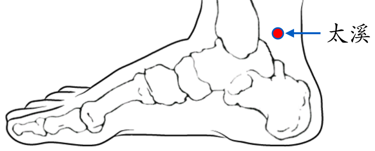

【穴位名稱】: 太溪 (KI3)

【治療症狀】: 心悸 心動過速 真心痛 心房纖顫 心律不齊 冠心病 貧血 風濕性心臟病 食慾不振 肺炎 支氣管炎 氣喘 哮 小便不利 淋病 陽萎 遺精 前列腺炎 尿路感染 月經不調 月經過多 經痛 閉經 子宮下垂 胎位不正 不孕症 難產 失眠 神經衰弱 重癥肌無力 小腿肚痛 腳踝痠痛 腳跟痠痛 腳跟痛 頭痛 牙痛 牙酸 牙齦炎 耳嗚 聽力問題 喉嚨痛 喉嚨異物感 扁桃腺炎 眩暈
【取穴位置】: 足內側部，內踝後方，內踝尖與跟腱之間凹陷處。《靈樞·本輸》：「內踝之後，跟骨之上，陷者中也。」《醫學入門》：「內踝後五分」；《循經考穴編》：「踝骨尖平」。
【針刺方法】: 直刺0.5～1吋。艾炷灸3～5壯，艾條溫灸10～15分鐘。